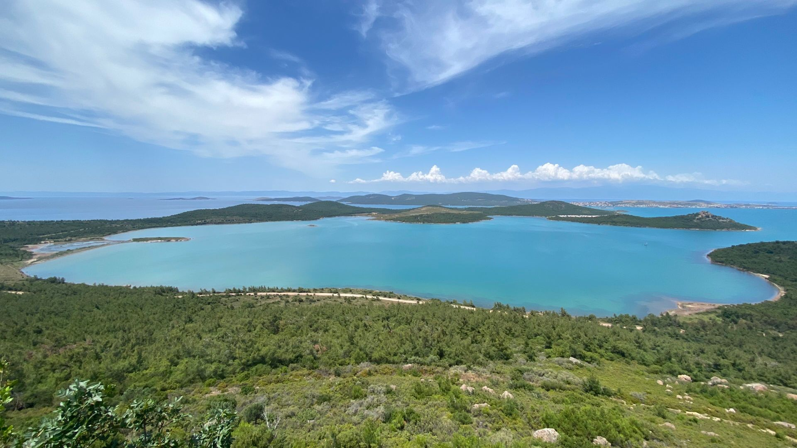
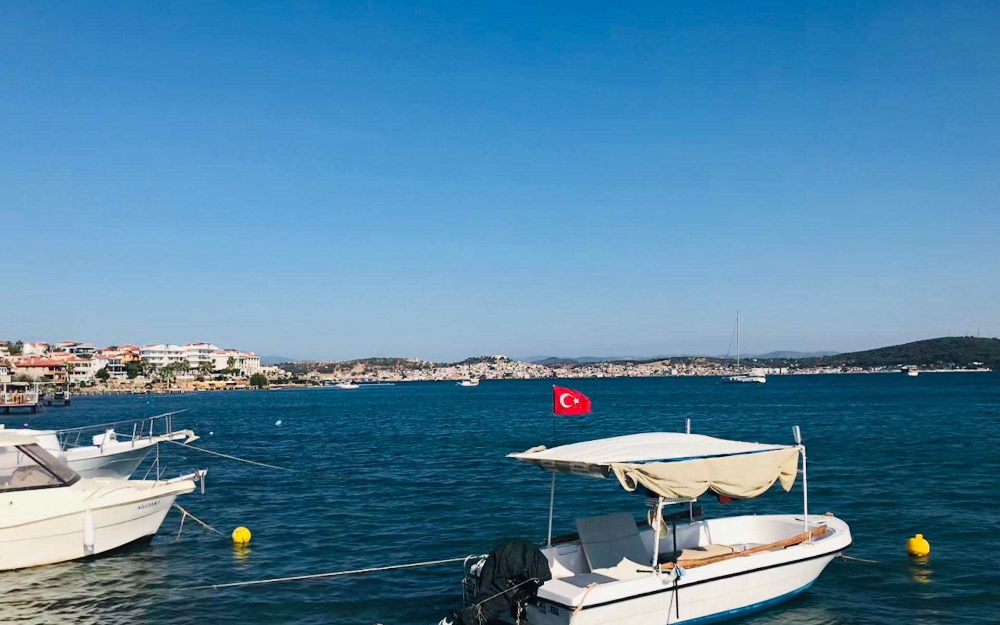
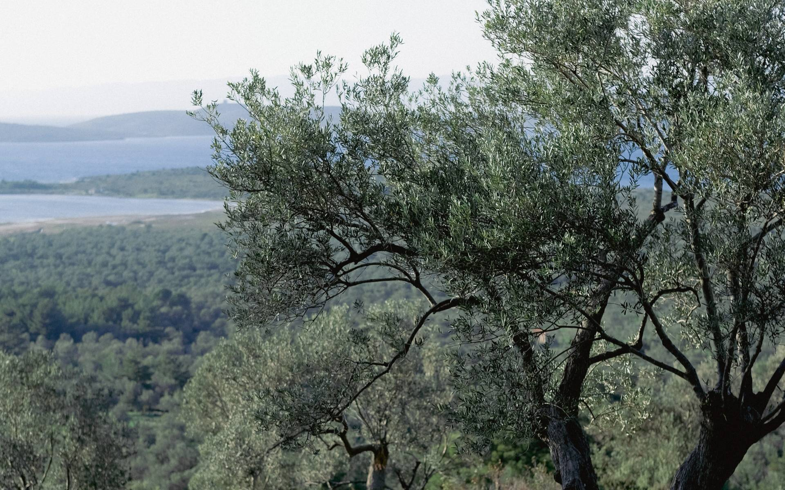
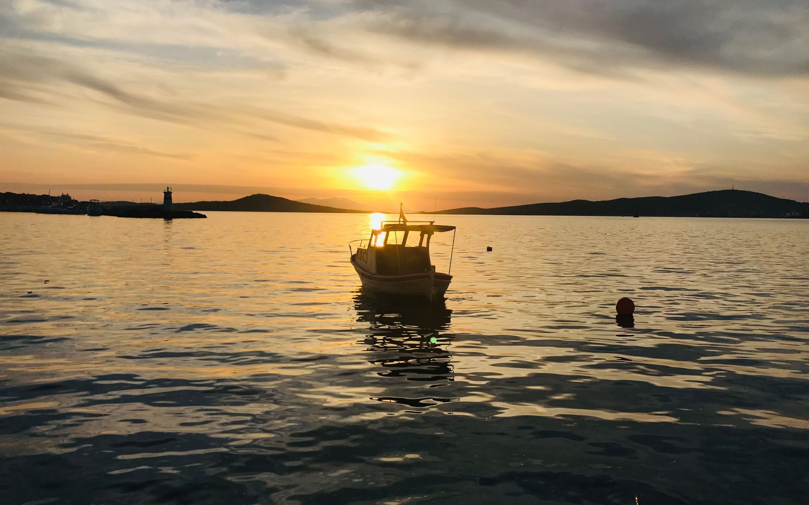
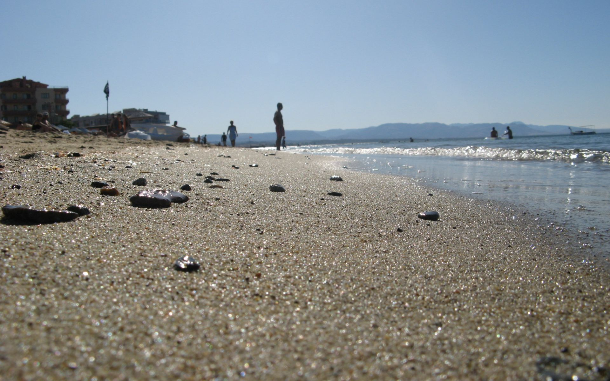
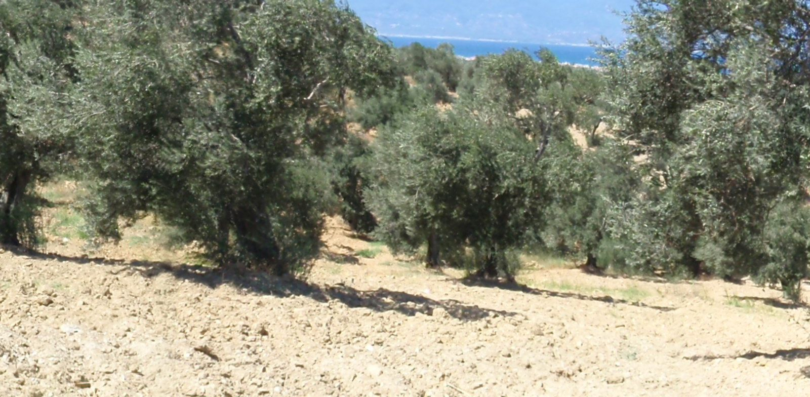
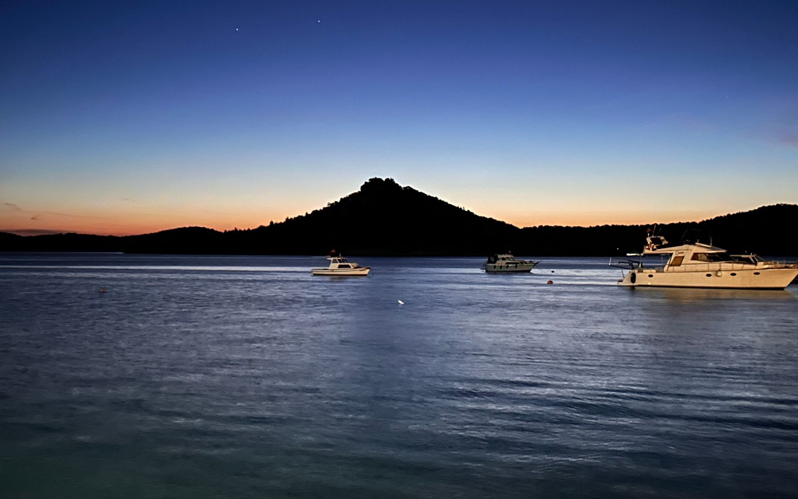
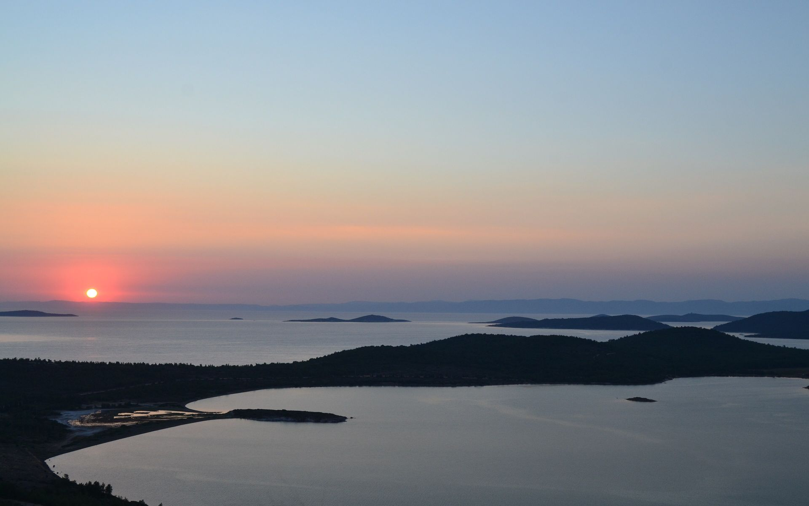
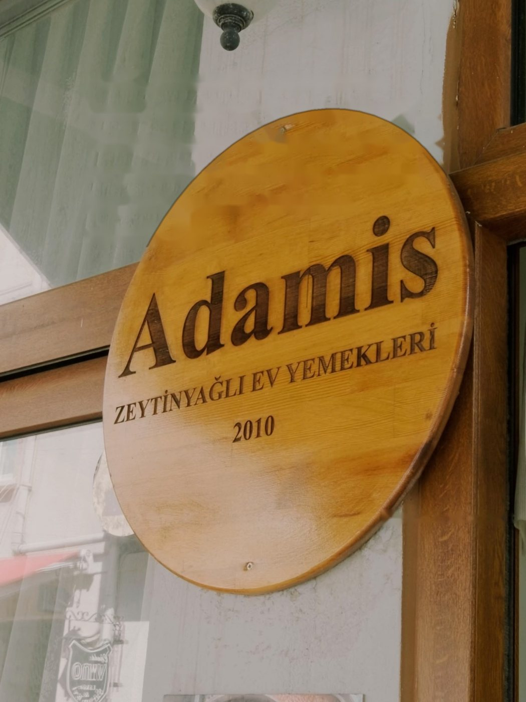
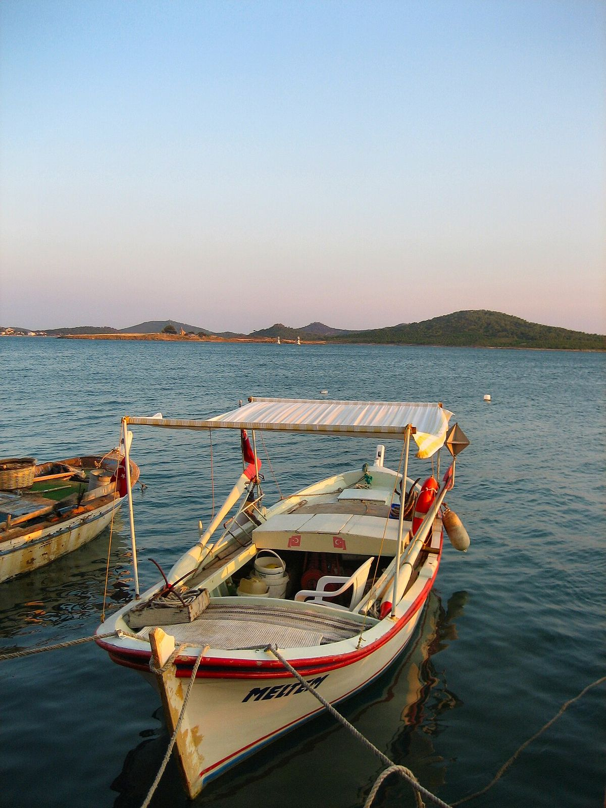

Zeytinyağlı ev yemekleri · Yöresel lezzetler
Cunda'nın
en güzel hali; tabakta.
Nuray'ın mutfağından, Ayvalık zeytinyağıyla pişen zeytinyağlılar ve adanın yöresel yemekleri. Her sabah taze, ev usulü.
Şeytan Sofrası'ndan Ayvalık adaları


Cunda Adası
Hikâyemiz
Adanın kalbinde, bir ev yemeği hikâyesi…
Adamis, Cunda'nın taş sokaklarında, denize yakın huzurlu bir köşe. Mutfakta 16 senedir Nuray var; annesinden, komşusundan öğrendiği tariflerle zeytinyağlıları ve adanın yöresel yemeklerini pişiriyor.
Ayvalık zeytinyağı, Ege otları, mevsiminde sebze. Zeytinyağlılar sabah pişer, tencereler gün boyu ocaktan iner; o gün ne pişmişse tezgâhta o var.
— Nuray'ın mutfağı
Yemekler
her gün değişir.
- Doğal ve taze malzemeler
- Sıcak ve samimi atmosfer
- Cunda'nın eşsiz konumu
- Ev yapımı lezzetler

Galeri
Adamis'ten kareler
Misafirlerimiz
Ne diyorlar?
Rezervasyon
Sıcak yemeğiniz, masanız hazır olsun
Yaz aylarında ve hafta sonları öğle saatlerinde yer bulmak zorlaşabiliyor. Formu doldurun, talebiniz WhatsApp üzerinden hazır mesaj olarak bize ulaşsın.
- Formu doldurun
- WhatsApp'ta hazır mesajı gönderin
- Ekibimiz masanızı onaylasın
İletişim & Konum
Cunda'nın Halk Caddesi'nde
- Adres
- Mithatpaşa Mah., Halk Caddesi No:4-6, Cunda, 10405 Ayvalık / Balıkesir
- Telefon
- 0266 327 15 70
- Cep · WhatsApp
- 0507 055 49 38
- Çalışma saatleri
- Her gün 09:00 – 22:30